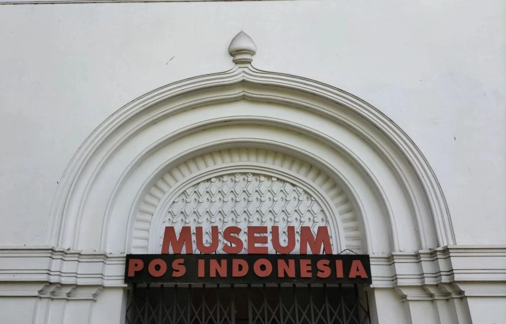

profil
PROFIL MUSEUM POS INDONESIA

Museum Pos Indonesia telah hadir sejak masa Hindia Belanda dengan nama Museum PTT (Pos Telegram dan Telepon) ,tepatnya pada tahun 1931 terletak dibagian sayap kanan bawah Gedung Kantor Pusat PTT Jalan Cilaki No.73 Bandung 40115.
Museum ini dibuka untuk umum dan koleksinya terdiri dari prangko-prangko baik dalam maupun luar negeri namun terjadinya peristiwa Perang Dunia ke II menyebabkan Museum ini kurang terurus sebagaimana mestinya, bahkan nyaris terlupakan. Timbulah gagasan untuk mendirikan Museum Pos dan Giro yang koleksinya tidak hanya terdiri dari prangko-prangko tetapi juga benda-benda lainnya berupa foto-foto, peralatan pos dan lain sebagainya yang bernilai sejarah. Untuk mewujudkan gagasan yang sudah lama ada ini maka pada tanggal 18 Desember 1980 oleh Direksi Perum Pos dan Giro telah dibentuk sebuah panitia dengan nama Panitia Persiapan Pendirian Museum Pos dan Giro dengan tugas utama melakukan inventarisasi dan mengumpulkan benda-benda bersejarah yang layak dijadikan isi Museum
Setelah bekerja beberapa bulan lamanya, Panitia telah berhasil mengumpulkan beberapa benda yang kemudian telah pula diusahakan untuk dipamerkan kepada umum dalam bentuk suatu Pameran Pos dan Giro yang diselenggarakan pada tanggal 27 September 1982 bersamaan pula dengan peresmian penerapan Sistem Kode Pos Indonesia untuk keperluan intern Perum Pos dan
Giro oleh Direktur Utama Perum Pos dan Giro bertempat di ruangan lantai bawah gedung Kantor Pusat Perum Pos dan Giro. Dan setahun kemudian pada tanggal 27 September 1983 bertepatan dengan Hari Bakti Postel ke 38 ruangan lantai bawah tersebut oleh Menteri Pariwisata, Pos dan Telekomunikasi, Achmad Tahir telah diresmikan sebagai museum dengan nama MUSEUM POS DAN GIRO.
Sejalan dengan perkembangan perusahaan pos dimana terhitung tanggal 20 juni 1995 nama dan status perusahaan berubah dari Perusahaan Umum Pos dan Giro menjadi PT. Pos Indonesia (persero). maka terjadi pula perubahan nama museum ini dari Museum Pos dan Giro menjadi Museum Pos Indonesia sampai sekarang.